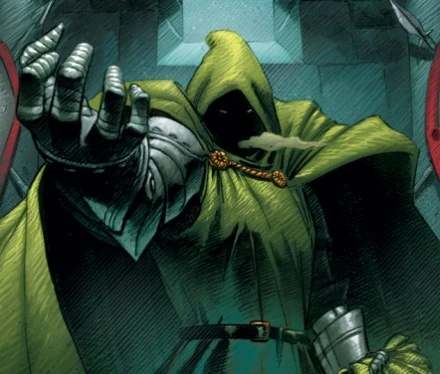
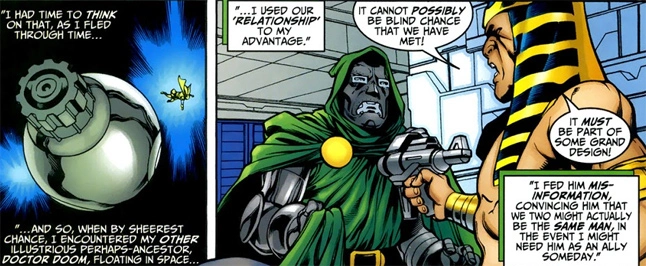

Doctor Doom, ou Victor Von Doom, é um dos vilões mais icônicos da Marvel. Cientista brilhante e governante da fictícia Latveria, ele combina inteligência superior com habilidades mágicas. Seus conflitos com o Quarteto Fantástico e outros heróis são impulsionados por seu desejo de poder absoluto e um senso distorcido de justiça. Com sua armadura impenetrável e uma personalidade complexa, Doom é o exemplo perfeito de um vilão que acredita estar fazendo o que é certo, mas sempre busca seu próprio benefício.
 